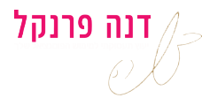
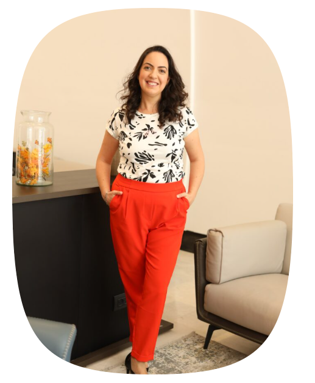

דרכי החיפוש שעבדו פעם כבר לא רלוונטיות, וקשה לדעת איך מחפשים עבודה היום
קראו עוד ←תהליך בשלושה שלבים — ברור, מובנה וממוקד תוצאה.
פגישת עומק למיפוי המצב, החוזקות, הערכים והמטרות שלך.
הגדרת כיוון ומיצוב אישי, ובניית הנכסים: קורות חיים, לינקדאין ונרטיב מקצועי.
חיפוש ממוקד, הכנה לראיונות ומשא ומתן על תנאים — עד החתימה על החוזה.

במשך 15 שנים אני מלווה מנהלים ובכירים בצמתי הקריירה המשמעותיים ביותר שלהם. לאורך הדרך גיליתי שהאתגר האמיתי הוא לא כתיבת קורות חיים או שיפור פרופיל הלינקדאין, אלא יצירת בהירות, מיצוב ואסטרטגיה שמאפשרים להגיע להזדמנויות הנכונות. מתוך התובנה הזו פיתחתי תהליך שמחבר בין הניסיון, הערך והמטרות של כל לקוח – לתפקיד הבא שלו.
20 דקות, נמפה יחד את המצב ותצאו עם תמונה ברורה. בלי שום התחייבות.
לתיאום שיחת היכרותישראלית ישראלי · סמנכ"לית · ישראל
"הגעתי תקועה אחרי 12 שנה באותה חברה. תוך ארבעה חודשים חתמתי על תפקיד ניהולי בכיר — ובעיקר, הבנתי מה אני באמת רוצה."
152+
בכירים ואנשי מקצוע שליוותי
15
שנות ניסיון בתחום
98%
הגיעו לתפקיד הבא שלהם
אם אחד מהתיאורים הבאים מדבר אליך, בואו נדבר
מי שמרגיש שמיצה את התפקיד הנוכחי ומוכן לאתגר הבא
C-level והמחפשים מרחב חשיבה מחוץ לארגון
מנהלים שרוצים להוביל מתוך בהירות ולהשפיע יותר.
מי שעומד בצומת ורוצה לעבור לתפקיד או תחום חדש.
עצמאים ומומחים שרוצים לצמוח ולבנות עסק ברור.
אחרי הפסקה עם הילדים, מחלה, חו"ל חוזרים עם ביטחון.
כתיבה ושדרוג קורות חיים באנגלית ובעברית כולל תרגום מקצועי שמבליטים את הערך שלך, עוברים את שלב הסינון התאמה לתחום ומביאים זימונים לראיונות עבודה
להזמנת כתיבת קו״חתהליך קצר וממוקד שיחזיר אתכם לעצמכם ולכיוון הנכון. תהליך עומק שמשלב אסטרטגיה פרקטית ועבודה מנטלית כדי לעזור לך להתקדם לתפקיד הבא שלך בצורה מדויקת
לתיאום שיחת ליוויראיונות עבודה יכולים לעורר רגשות של חרדה ולחץ בקרב רבים. אל תפספסו את ההזדמנות להציג את עצמכם כמועמדים האולטימטיביים – השקיעו ויהיה לכם יתרון
להרשמה להכנה לראיון